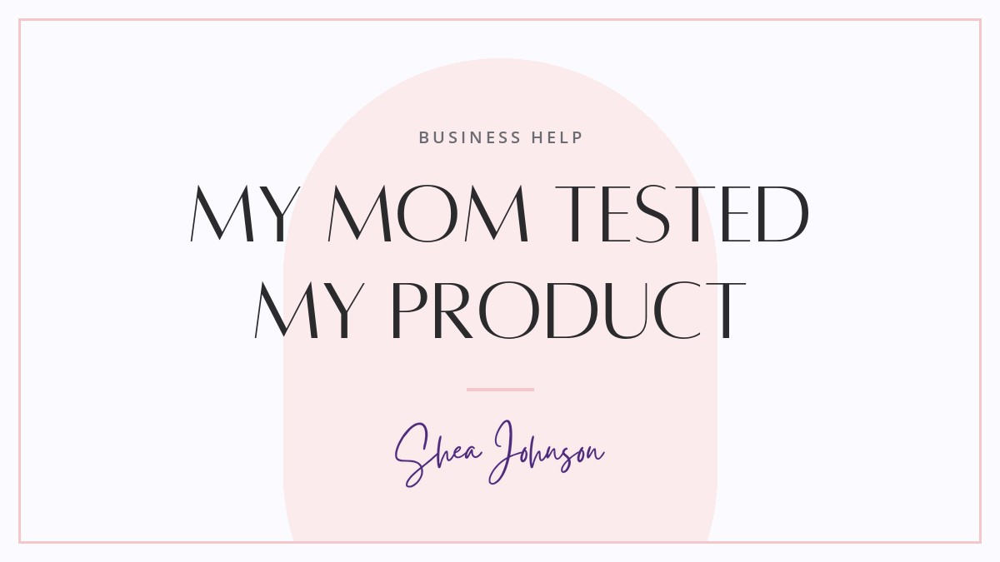

My mom came over for an all-day boot camp.
That was the plan anyway. Six to eight hours. Device-free. Structured. Focused.
She was going to test Volume 1 of my Powerhouse Entrepreneur series, the Foundation. An AI-powered coaching system I had been building for months.
I thought it was perfect.
I was wrong.
What was supposed to be a boot camp turned into something else entirely. A hybrid. Half coaching session, half mother-daughter day. It just sort of… unfolded that way.
And I’m really happy it did.
I knew my mom was going through some of the things I had already tackled in my own life. I wanted her to experience the same transformation I received by using AI as a companion, an advisor, an assistant, and honestly… a virtual friend.
So she sat down. She started answering the questions. She uploaded everything into an AI project.
And the AI started coaching her.
That’s when I saw the problem.
The AI was only seeing one piece of her life at a time. It didn’t know about her schedule when it was setting her goals. It didn’t know about her health when it was building her plan. It didn’t know about her finances when it was giving her advice about her business.
It was coaching a stranger.
And I built it that way. The original version had you answer one question at a time, one prompt at a time. The AI would respond to each one individually. It seemed logical.
But it wasn’t working.
Because a coach who only sees your knee can’t diagnose your body. And an AI that only has context about one area of your life can’t give you a realistic and personalized action plan.
That one afternoon changed everything.
I went back and rebuilt the entire system from scratch. Not just Volume 1. All four volumes.
The new version? You answer 50 deeply personal questions about your whole life: your values, your goals, your real schedule, your finances, your health, your patterns, your fears, your dreams. You brain-dump everything into one document.
Then you upload it alongside the guide into an AI project.
And the AI sees all of you at once.
It connects your values to your goals. It spots contradictions between what you say matters and how you actually spend your time. It notices the patterns you can’t see because you’re too close to your own story.
The difference was extraordinary.
And my mom wasn’t the only tester who changed the product.
A close friend of mine came back to me and said…
“Hey Shea… it thinks I’m a woman.”
I was mortified.
I realized the system wasn’t pulling basic information before coaching someone. It was making assumptions. Bad ones.
So I added an entire “About You” section that captures who the person actually is (name, age, gender, location, family situation, health, support system) before the AI guides them anywhere.
Was it a funny moment?
Absolutely.
And a moment that saved my business and its first impressions.
Here’s what I learned from all of this
I took something simple, a time management skill I built for myself, and I used AI to turn it into a digital product.
And something unexpected happened.
That product became a transformational journey. Not just for the people who used it… but for me.
AI didn’t create my idea. AI helped me see what was already inside me and bring it out.
And here’s the part that changed everything…
When you take something you discovered for yourself, something that helped you, and you share it with the world… business becomes more than a profit-producing machine. It becomes your contribution to society. Your way of leaving behind a better world for everyone.
So now I have a finished product.
One that’s been tested, broken, rewritten, tested again, and rebuilt from the ground up.
“The question is NOT ‘Are you worthy enough to reach your goals?’ The question is ‘Are your goals worthy enough of you?’” (Bob Proctor)
The Powerhouse Entrepreneur Series is in my shop. If this is something that interests you, visit mssheajohnson.com and subscribe so you never miss what I’m creating next.
Now go be a powerhouse.